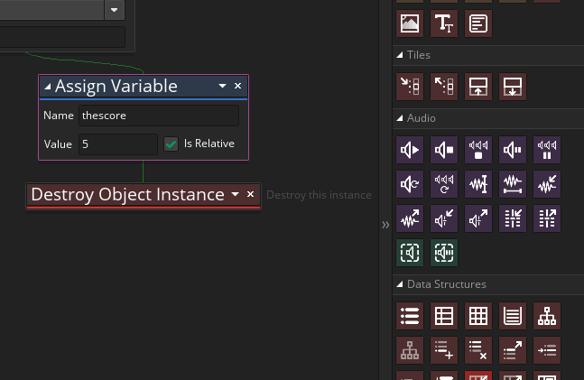
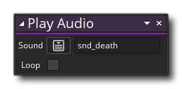

Playing a sound is really simple and requires a single action, the Play Audio action from the "Audio" library. We are going to place this action into the enemy object obj_enemy, specifically in the Step Event, just before we destroy the instance. So, open this object now for editing and go to the Step event and add this action just before the Destroy Object action  :
:

With that added all you need to do is select the sound to be played from the menu (there will only be the one sound that we have added), and there is no need to check the "Loop" checkbox, as that will make the sound loop continuously until the game ends or we call an action to stop it. Generally this is what you want for music or ambient effects like a wind or waterfall sample, but not for single sound effects like this. 
You can test the game now and kill a few enemies to hear the sound play.